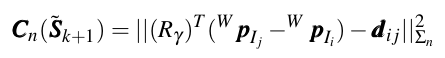
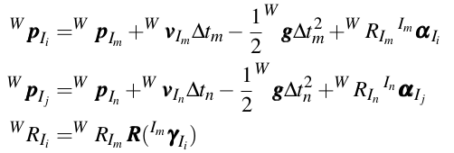

1State Key Lab of CAD & CG, Zhejiang University
2SenseTime Research and Tetras.AI
* denotes corresponding author
In this work, we propose a tightly-coupled EKF framework for visual-inertial odometry with NIN (Neural Inertial Navigation) aided. Traditional VIO systems are fragile in challenging scenes with weak or confusing visual information, such as weak/repeated texture, dynamic environment, fast camera motion with serious motion blur, etc. It is extremely difficult for a vision-based algorithm to handle these problems. So we firstly design a robust deep learning based inertial network (called RNIN), using only IMU measurements as input. RNIN is significantly more robust in challenging scenes than traditional VIO systems. In order to take full advantage of vision-based algorithms in AR/VR areas, we further develop a multi-sensor fusion system RNIN-VIO, which tightly couples the visual, IMU and NIN measurements. Our system performs robustly in extremely challenging conditions, with high precision both in trajectories and AR effects. The experimental results of evaluation on dataset and online AR demo demonstrate the superiority of the proposed system in robustness and accuracy.
BVIO is our RNIN-VIO without the neural inertial network constraints. The left video is our offline test on a computer with an i7-6700 CPU and 16G RAM. The right video is an online AR Demo. We take Huawei’s Mate20 pro as the testing device. The inputs are 30Hz images with 512 × 384 resolution and 200 Hz IMU data.
Our estimation system takes IMU data and image as input and is mainly
composed of four modules including preprocessing, initialization,
neural network, and filter.
The IMU data between two consecutive frames are
pre-integrated and sparse features are extracted and tracked from the
images. We also maintain the IMU Buffer as the input of the neural
network.
An initialization phase is necessary to ensure the filter will converge.
In order to adapt to a variety of motion situations, when the
system detects static motion, we use static initialization, and when
the system detects motion, we use motion initialization.
The neural network is trained to learn prior motion distribution.
The network takes a local window of IMU data as input, without
obtaining the initial velocity, and regresses the 3D relative displacement and
uncertainty of this window. Regardless of the influence of
noise, under the same windowed IMU data, different initial velocities
correspond to different motions, which means that motion cannot be
estimated by IMU data alone. Since our system is mainly designed
for handheld AR, AR glasses, and other applications, our estimated
movement is mainly concentrated on human motions. We believe
that despite the broad movement distribution, the human movement
distribution should be relatively narrow, and the same IMU data
corresponding to different motions will rarely appear. Based on this
consideration, we believe that such a network can work normally,
just like the previous related work.
The filter propagates with IMU data and uses sparse features and
network outputs for updates, which tightly couples all measurements.
In our system, the visual constraints can be removed at any time,
and state estimation can also be carried out only based on IMU
measurements.
We propose a deep learning based inertial network to learn
the regularity of humans’ motion patterns in time series.
The overall architecture of our network consists of the 1D version of ResNet18,
standard LSTM, and fully
connected layers. The ResNet module is used to learn human motion
hidden variables. We believe that human motion is continuous and
regular, so we use LSTM to fuse the current hidden state with the
previous hidden state to estimate the best current hidden state of
motion. Finally, two fully connected layers are used to regress the
relative position of the window and the corresponding covariance.
The designed relative loss and absolute loss can make the network
cares about the local accuracy as well as the long-term global
accuracy.
We try to integrate the robust but low-precision neural network IMU observations with the traditional visual-inertial navigation system, in order to construct a highly robust and precise visual-inertial navigation system. The traditional visual-inertial fusion can estimate high accuracy states, such as pose, velocity, the direction of gravity, and IMU bias. On the one hand, better state estimation can provide better initialization data for the IMU neural network to regress relative translation and covariance, thereby improving the effectiveness of network estimation. On the other hand, the IMU neural network can enhance the robustness of the navigation system.
Other modules are similar to traditional VIO. Here we only talk about Neural Inertial Measurement. There are two points needing special attention here. First, the learned movement pattern is yaw angle equivariant. Second, the network predict time are not aligned in time with the estimated states. Cost function of Neural Inertial Measurement is:
The pre-integration is used to propagate Neural Inertial Measurement to the estimated states:
Compare with RoNIN and TLIO, our system achieves higher absolute and relative accuracy.
The NIN can be generalized to different people, different devices, and different environments. The relative loss and absolute loss can make the network care about the local accuracy and also pay attention to the long-term global accuracy.
The accuracy of RNIN-VIO is close to that of BVIO in normal scenarios. In challenging scenarios, the accuracy of RNIN-VIO is significantly better than that of VIO.
Our dataset is mainly composed of two parts, including IDOL open
source 20 hours of data and 7 hours of data collected by ourselves.
IDOL mainly includes some simple plane movements. To increase the
diversity of sports and equipments, we use multiple smartphones,
such as Huawei, Xiaomi, OPPO, etc., to collect data with cameras
and IMUs. The full dataset was captured by five people and includes
a variety of sports, including walking, running, standing still, going up and down stairs,
and random shaking, etc. We use the BVIO to
provide the positions aligned with gravity
at IMU frequency on the dataset. Part of the data is collected in
the VICON room, so it has high-precision trajectory provided by
VICON.
We release
our dataset
collected by ourselves. The data is stored in SenseINS.csv. The format of files are as follow:
Data
|--data_train
| |--0
| |--SenseINS.csv
| |--...
|--data_val
| |--0
| |--SenseINS.csv
| |--...
|--data_test
| |--0
| |--SenseINS.csv
| |--...
|--Sense_INS_Data.md // The format description of SenseINS.csv
@article{chen2021rninvio,
title={{RNIN-VIO}: Robust Neural Inertial Navigation Aided Visual-Inertial Odometry in Challenging Scenes},
author={Danpeng Chen, Nan Wang, Runsen Xu, Weijian Xie, Hujun Bao, and Guofeng Zhang},
journal={In Proceedings of 2021 IEEE International Symposium on Mixed and Augmented Reality},
year={2021}
}
The authors are very grateful to Shangjin Zhai, Chongshan Sheng, Yuequ Cai, and Kai Sun for their kind help in developing RNIN-VIO system. This work was partially supported by NSF of China (Nos. 61822310 and 61932003).